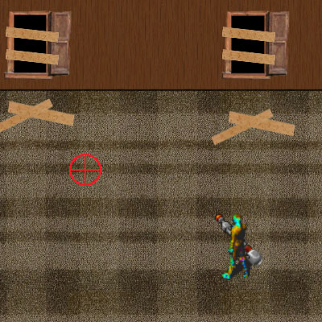
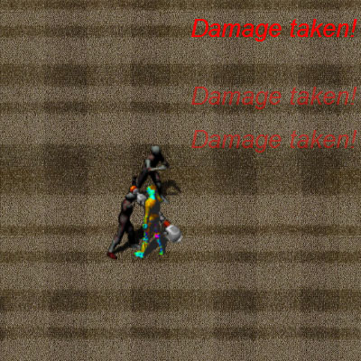

Welcome to the Tutorials Page
Welcome to the tutorials page, feel free to work through the entire tutorial or use the links just above, to navigate quickly through the page to a specific area.
This tutorial covers the basics for new players, advanced information for aspects slightly more complicated,
and multiplayer information.
Basics
Welcome to the game!
This game is a classic wave clearing game, which means enemies will rush you, and it's up to you to send them back
to where they came from! Buut, after a wave has been cleared, a new wave begins, which is harder than the previous,
so the aim of the game is to see how far you can get.
You are trying to keep alive in your house, and the zombies are trying to get you, they will continue to smash through your
windows and charge at you, to stop them shoot them with your gun!
The player
During the game you control one survivor, the survivor is dressed incredibly funky to distance himself from the zombie swine!
Controls
To move the player around use the W-A-S-D keys, these move the player up-down-left and right.
To fire the gun use the space bar.
To repair windows use the R key.
Advanced
You now know how to move around and interact with the world, so what's next?
The enemy
The enemy armys are made up completely of zombies, the zombies are a dark grey and very predictable. The zombies will break through your windows and attack you, if you take too much damage you will die. If your playing on your own the game is over, if your playing with others and everyone dies, the game is over.
The house
Zombies will stop at nothing to get you, they will smash the windows through when needed, and it's up to you to fix them. By fixing the windows you keep the enemies out!
You can fix broken windows by moving close to it and holding R, you will place the planks back onto the windows.
Pick-ups
Sometimes when zombies die, they will drop a pick-up. Pick-ups are beneficial to the user, but get to them quickly, as they are time restricted!
Pick-ups can be picked up by the user, by simply running into them, pick-ups include: Health increase, speed increase, bullet size increase, shot speed increase and piercing bullets.
Multiplayer
So your ready to play in the big league!
Well.. Welcome! Multiplayer is where you can test your ability and teamwork with others. The game is similar to single player, except your with other players, and more zombies spawn depending on the amount of players playing, look out for the other players, wearing there funky green and purple!.
Ps. If the game doesn't load in multiplayer, this is because the game server is currently down!